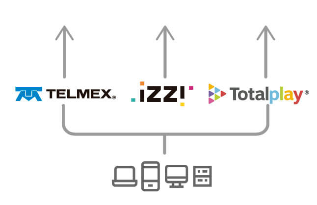
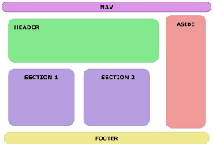

¿Qué es internet?
Internet es la red que conecta e interrelaciona dispositivos electrónicos y redes de computadoras entre sí, de todo el mundo. Su nombre proviene del inglés International Network que significa “Red Internacional” y el acrónimo de esas palabras dio origen al nombre Internet. Internet es un nombre propio que denomina a una red concreta y que emplea una tecnología determinada. Consiste en una red informática de telecomunicaciones que utiliza un sistema de reglas para las conexiones entre los diferentes dispositivos resulten compatibles.
¿Qué es un proveedor de internet?
Los proveedores de servicios de Internet (ISP) son organizaciones que permiten a los clientes acceder y utilizar Internet. Los ISP también suelen ofrecer otros servicios además del acceso a Internet, como servicios de correo electrónico, registro de dominios y alojamiento web. Otros nombres comunes para los ISP son proveedores de servicios de información y proveedores de servicios de Internet (INSP).
Tipos de provedores de internet
- Proveedores de servicio de internet por cable
- Proveedores de servicio de internet por DSL
- Proveedores de servicio de internet por fibra optica
- Proveedores de servicio de internet inalambrico
Estos proveedores utilizan la infraestructura de cable de televisión existente para ofrecer conexiones de alta velocidad a Internet a través de cables coaxiales. Suelen ser populares en áreas urbanas y suburbanas.
Los proveedores DSL utilizan la línea telefónica tradicional para proporcionar conexiones de banda ancha a Internet. La velocidad de conexión DSL puede variar según la distancia desde la central telefónica.
Estos ISP ofrecen conexiones ultrarrápidas utilizando cables de fibra óptica para transmitir datos. La fibra óptica es conocida por su alta velocidad y baja latencia. Sin embargo, su disponibilidad suele ser limitada a áreas metropolitanas y urbanas.
Los ISP inalámbricos utilizan señales de radio para proporcionar acceso a Internet. Pueden ser una opción en áreas rurales o remotas donde otras formas de conexión son limitadas. Esto incluye servicios como WiMAX y proveedores que utilizan tecnología de torres celulares.

¿Qué es la experiencia de usuario?
La experiencia de usuario (UX, por sus siglas en inglés, User Experience) se refiere a la percepción general que tiene una persona al interactuar con un producto, servicio, sistema o plataforma digital. Esta percepción abarca todos los aspectos de la interacción, incluyendo la usabilidad, la accesibilidad, el diseño, la eficiencia, la satisfacción emocional y más. En resumen, la UX se trata de cómo se siente y se comporta un usuario al utilizar algo.

¿Qué es interfaz de usuario?
Una interfaz de usuario, comúnmente abreviada como UI (del inglés User Interface), se refiere a la parte visual y funcional de un sistema informático o software que permite a los usuarios interactuar con él. En otras palabras, la interfaz de usuario es el medio a través del cual los usuarios pueden comunicarse y controlar un programa, una aplicación, un dispositivo o un sistema. La interfaz de usuario incluye todos los elementos visuales y de interacción que los usuarios ven y utilizan cuando interactúan con una computadora o un dispositivo electrónico

¿Qué son los protocolos de internet?
Los protocolos de Internet son un conjunto de reglas y estándares que permiten la comunicación y la transferencia de datos en la red de Internet. Estos protocolos son esenciales para que los dispositivos y sistemas informáticos puedan entenderse y cooperar en la transmisión de información a través de Internet de manera coherente y eficiente. Los protocolos de Internet se basan en un modelo de comunicación denominado "modelo OSI" (Open Systems Interconnection), que consta de capas, cada una de las cuales desempeña un papel específico en la comunicación de datos.
¿Qué es HTML?
Es un lenguaje de marcado utilizado para crear y diseñar la estructura básica de las páginas web. Fue desarrollado en la década de 1990 y se ha convertido en el estándar fundamental para la construcción de páginas web en la World Wide Web.HTML es un lenguaje de marcado de texto que utiliza etiquetas para definir elementos y estructuras en una página web. Cada etiqueta está encerrada entre corchetes angulares ("< >") y se utiliza para describir elementos como encabezados, párrafos, listas, imágenes, enlaces y otros elementos de una página web. Las etiquetas de HTML son interpretadas por los navegadores web para mostrar el contenido de una página de manera adecuada.

¿Qué es la semántica en html?
La semántica en HTML se refiere al significado y la estructura que le das a tu contenido web mediante el uso de elementos HTML apropiados. En otras palabras, se trata de utilizar los elementos HTML de manera que reflejen correctamente la estructura y el propósito del contenido de tu página web. Al hacerlo, no solo estás creando una página web más organizada y fácil de entender para los desarrolladores y los motores de búsqueda, sino que también estás mejorando la accesibilidad y la experiencia del usuario.
